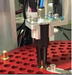
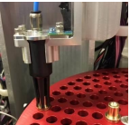
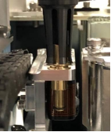
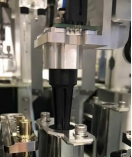
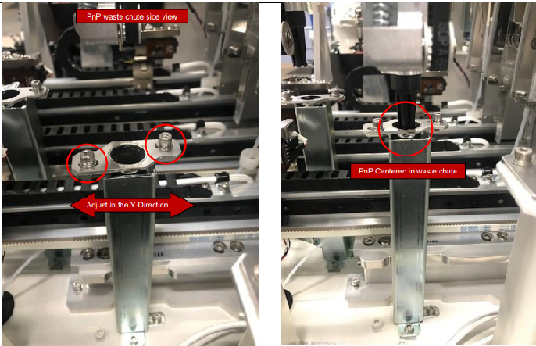

Adjusting and Aligning the Incubate Pick and Place (PnP)
This topic includes information about how to adjust and align the incubate pick and place.
Safety Reminder
Servicing the DxI 9000 instrument involves potential risks for pinch and puncture, electrical shock, and exposure to hazardous materials. You must mitigate these risks by taking appropriate countermeasures. See Safety for more information.
Prerequisites
- If you must make changes to the instrument's hardware, you must complete those changes before you prepare the instrument for adjustments and alignments.
- You must verify that alignments have previously been completed on the instrument. To verify, in the Machine Control App go to to open the Prototype Alignment page and to verify the Finalize Instrument Alignments button is GRAY in color. If the button is BLUE in color, do not complete this procedure. Instead, you must first complete manual alignments.
- You must first initialize the instrument to a GREEN (Ready) status to ensure all subsystems have been successfully initialized and homed. You must then enter the instrument into a BLUE (Maintenance) status.
Prepare the Instrument for Adjustments and Alignments
You must prepare the instrument for adjustments and alignments.
- Sign in to use the BeckmanAdmin account. See Signing In to Use the BeckmanAdmin Account for more information.
- Disable the interlock switch. See Enabling and Disabling the Interlock System for Cover Switch Sensors for more information.
- Open all hoods and covers.
- Initialize the instrument to a
GREEN (Ready) status. See
Initializing the Instrument for more information.
Note: If the instrument enters into a RED (Stopped) status:
- Verify the interlock switch is in the correct position.
- Be sure you are signed in to use the BeckmanAdmin account.
- In the Console App go to and select Start Session.
- Complete all troubleshooting, adjustments, manual alignments, and maintenance necessary to be able to initialize the instrument to a GREEN (Ready) status.
- Select the SYSTEM RUNNING button and go to to enter the instrument into a YELLOW (Paused) status.
Aligning the Incubate PnP to the Incubate Wheel - Inner Position
Perform this procedure to align the incubate pick and place (PnP) to the Incubate Wheel - Inner position.
- In the Console App go to and select Start Session.
- In the Machine Control App go to to open the Prototype Alignment page.
- Go to .
- Select Home All.
- Select
Auto Align.
- If the alignment succeeds, you will see a dialog with the notification Save successful. Select OK.
- If alignment fails, manually align the PnP:
- Select
Disable All to disable motor power.
Caution: Be careful when moving devices by hand so as not to bend or damage any components.
- Remove the cover from the incubate wheel
- Manually move the PnP and wheel so that the PnP collet fully seats on top of the inner alignment pin on the incubate wheel. Lift the brass jumping pin up into the collet; be sure it is not binding in any way.
- Be sure the PnP collet is down as far as it will travel on top of the pin.
- Select Measure All. The PnP and wheel should return to their home positions.
- Select Save All to save the alignments.
- Select
Move To Position and verify the alignment.
Tip: You can disable the PnP Z-motor and use the belt and pulleys to move the PnP up and down. Verify the collet successfully picks up the alignment pin and is centered in the X and Y directions.

- Select Home All.
- Repeat auto alignment.
- Select
Disable All to disable motor power.
- Reinstall the incubate wheel cover
Aligning the Incubate PnP to the Incubate Wheel - Outer Position
Perform this procedure to align the incubate pick and place (PnP) to the Incubate Wheel - Outer position.
- In the Console App go to and select Start Session.
- In the Machine Control App go to to open the Prototype Alignment page.
- Go to .
- Select Home All.
- Select
Auto Align.
- If the alignment succeeds, you will see a dialog with the notification Save successful. Select OK.
- If the alignment fails, manually align the PnP:
- Select
Disable All to disable motor power.
Caution: Be careful when moving devices by hand so as not to bend or damage any components.
- Remove the cover from the incubate wheel
- Manually move the PnP and wheel so that the PnP collet fully seats on top of the outer alignment pin on the incubate wheel. Lift the brass jumping pin up into the collet; be sure that it is not binding in any way.
- Be sure the PnP collet is down as far as it will travel on top of the pin.
- Select Measure All. The PnP and wheel should return to their home positions.
- Select Save All to save the alignments.
- Select
Move To Position and verify the alignment.
Tip: You can disable the PnP Z-motor and use the belt and pulleys to move the PnP up and down. Verify the collet successfully picks up the alignment pin and is centered in the X and Y directions.

- Select Home All.
- Repeat auto alignment.
- Select
Disable All to disable motor power.
- Reinstall the incubate wheel cover
Aligning the Incubate PnP to the Reaction Build Carriage Positions 1-4
Perform this procedure to align the incubate pick and place (PnP) to reaction build carriage positions 1-4.
- In the Console App go to and select Start Session.
- In the Machine Control App go to to open the Prototype Alignment page.
- Go to (where "#" refers to the reaction build carriage/reagent shuttle number the alignment is for).
- Select Home All.
- Select
Auto Align.
- If the alignment succeeds, you will see a dialog with the notification Save successful. Select OK.
- If the alignment fails, manually align the PnP:
- Select
Disable All to disable motor power.
Caution: Be careful when moving devices by hand so as not to bend or damage any components.
- Remove the cover from the incubate wheel .
- Manually move the PnP and carriage so that the PnP collet fully seats on top of the alignment pin. Lift the brass jumping pin up into the collet; be sure that it is not binding in any way.
- Be sure the PnP collet is down as far as it will travel on top of the pin.
- Select Measure All. The PnP and carriage should return to their home positions.
- Select Save All to save the alignments.
- Select
Move To Position and verify the alignment.
Tip: You can disable the PnP Z-motor and use the belt and pulleys to move the PnP up and down, Verify the collet successfully picks up the alignment pin and is centered in the X and Y directions.

- Select Home All.
- Repeat auto alignment.
- Select
Disable All to disable motor power.
- Repeat this procedure for additional carriage alignments.
- Reinstall the incubate wheel cover
Adjusting and Aligning the Incubate PnP to the Solid Waste Chute
Perform this procedure to adjust and align the incubate pick and place (PnP) to the solid waste chute.
- In the Console App go to and select Start Session.
- In the Machine Control App go to to open the Prototype Alignment page.
- Go to .
- Select Home All.
- Select
Disable All to disable motor power.
Caution: Be careful when moving devices by hand so as not to bend or damage any components.
- Manually move the PnP to the solid waste chute so that the collet is centered over and even with the top of the chute.
Important: This alignment does not include a pin, so be sure to visually confirm good alignment. The bottom of the collet should be on plane with the top of the chute; the collet should not be inserted into the chute.

If the chute is not centered in the Y-direction to the PnP collet:- Use a 2.5mm driver to loosen the two screws at the top of the chute.

- Adjust the chute in the Y-axis so that it is centered beneath the PnP collet.
- Tighten the screws to secure the chute in place.
- Use a 2.5mm driver to loosen the two screws at the top of the chute.
- Select Measure All. The PnP should return to the home position.
- Select Save All to save the alignments.
- Select Move To Position and verify the alignment.
- Select Home All.
Ending an Adjustments and Alignments Session
- In the Console App go to .
- Select End Session.
- Close all hoods and covers.
- Enable the interlock switch. See Enabling and Disabling the Interlock System for Cover Switch Sensors for more information.
- Sign out from the BeckmanAdmin account.
- Sign in to use the LabUser account.
- Initialize the instrument to a GREEN (Ready) status. See Initializing the Instrument for more information.
Verifications
Complete the verification of service repair. See Verification of Service Repairs for more information.